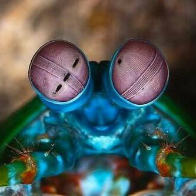
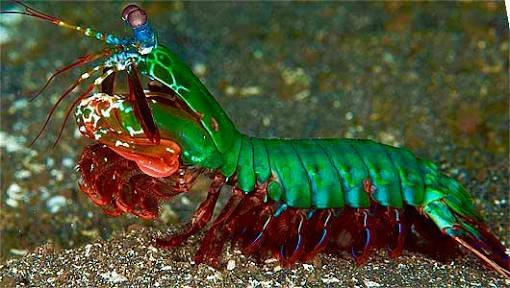

Fatos sobre o Stomatopoda
Informações científicas de Stomatopoda
- Nome científico: Odontodactylus scyllarus
- Reino: Animalia
- Filo: Arthropoda
- Subfilo: Crustacea
- Classe: Malacostraca
- Subclasse: Hoplocarida
- Ordem: Stomatopoda
A visão dos Stomatopoda
Esses animais possuem o mais complexo sistema de visão de cores do mundo animal, pois enxergam 12 cores primárias, correspondentes aos 12 pigmentos distintos presentes em sua retina.
O soco dos Stomatopoda
Excelente golpeador, o tamarutaca "soca" suas presas com suas garras com uma força de até 2,5 mil vezes seu peso em menos de 800 microsegundos. Este nocaute equivale a um tiro de pistola calibre 22.
Bibliografia
- https://pt.wikipedia.org/wiki/Stomatopoda
- https://www.bichonativo.com.br/post/2018/03/20/curiosidade-animal-habilidades-do-tamarutaca#:~:text=Este%20nocaute%20equivale%20a%20um,(at%C3%A9%2016%20cores%20prim%C3%A1rias).